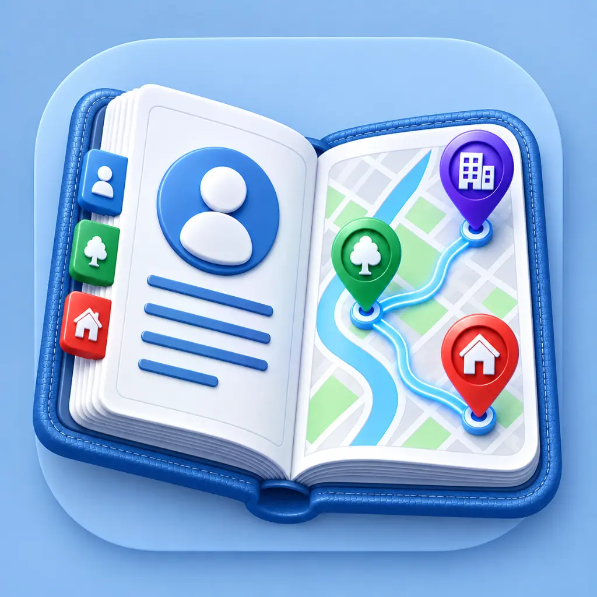
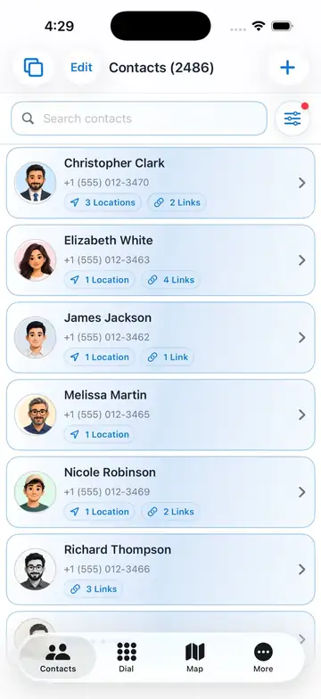
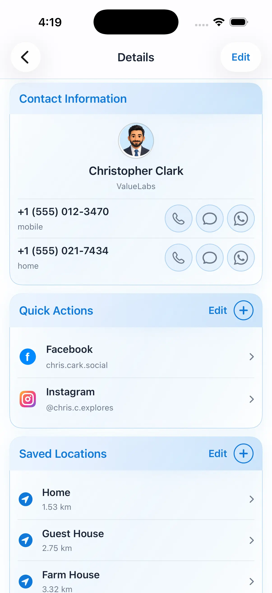
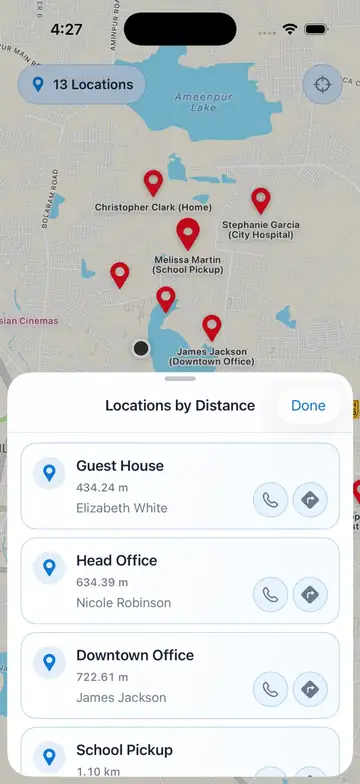
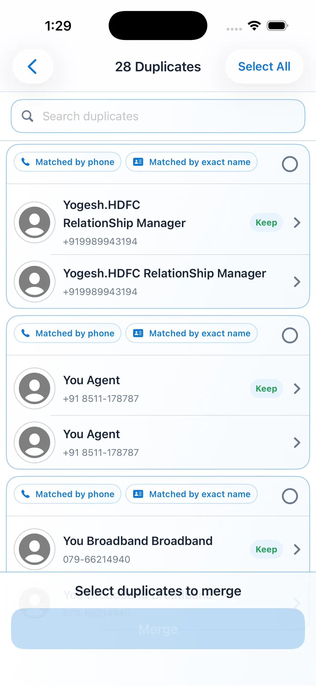
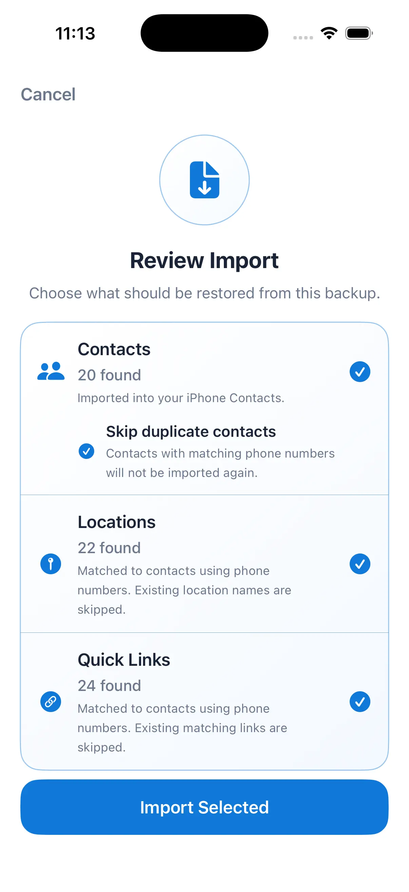
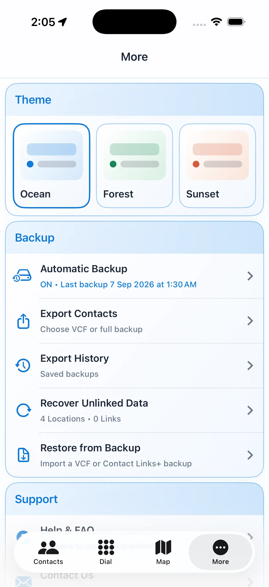

Smarter contacts
Search, filter and browse your iPhone contacts with at-a-glance counts for saved locations and quick actions.

Contact LinksYour iPhone contacts, made more useful. Add the places and quick actions that matter, call or message in a tap, find people on a map, and keep everything organized.
Designed for iPhone · support@contactlinks.in
ONE PLACE FOR YOUR CONNECTIONS
Contact Links gives every contact useful context: the places you associate with them, the ways you reach them, and the tools to keep your address book tidy.
Search, filter and browse your iPhone contacts with at-a-glance counts for saved locations and quick actions.
Use the built-in dial pad or call, message and WhatsApp a contact directly from their details.
Keep social profiles and other useful links with the right contact, ready whenever you need them.
Attach meaningful places—Home, Office, Guest House or School Pickup—to the people they belong to.
See saved locations on a map, then sort them by distance and contact the right person from the list.
Find matches by phone number or exact name, select the contacts you want, and merge with confidence.
Review a backup before importing and choose whether to bring in contacts, locations and quick actions.
Export contacts or a full backup, revisit export history, recover unlinked data, and restore when needed.
Choose an Ocean, Forest or Sunset theme to make Contact Links feel at home on your iPhone.
SEE IT IN ACTION
Scroll through the everyday tools that turn a contact list into something genuinely useful.

01 — CONTACTS
Search your address book, narrow it down with filters, and see the saved locations and quick actions connected to every person before you even open their details.

02 — DETAILS
Keep numbers, social profiles and the places you share with someone together. When it’s time to reach out, call, text or open WhatsApp in one tap.

03 — MAP
See your saved contact locations on a single map. Open the nearby list to sort places by distance, then contact the right person or get directions without losing your place.

04 — CLEAN UP
Contact Links spots duplicate entries by matching phone numbers and exact names. Review each match, choose what to keep, and merge only the contacts you select.

05 — IMPORT
Before an import begins, review what’s in the backup and decide what belongs on your phone. Contacts, saved locations and quick actions can be selected independently.

06 — YOUR DATA, YOUR WAY
Choose a theme that suits you, export your contacts or a full backup, revisit export history, recover unlinked data, and restore when you need to.
CONTACT LINKS
One app for the people you know, the places that matter, and the actions you use most.
SUPPORT
We're here to help with setup, backups, imports and anything else related to Contact Links.